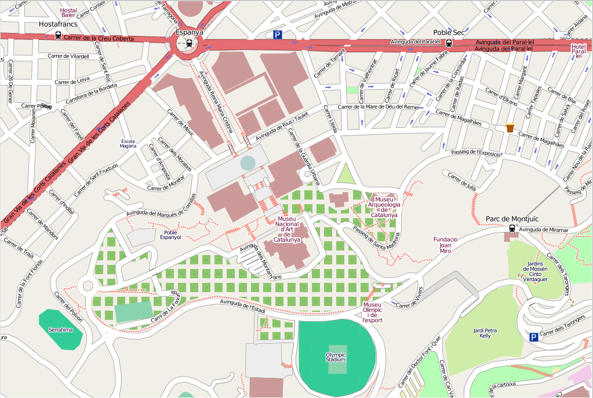

OSGeoLive
and friends

Vaclav (Vashek) Petras, NCSU Center for Geospatial Analytics
CC BY 2017, main part based on OSGeoLive presentation by Cameron Shorter and Angelos Tzotsos
What is OSGeoLive?
- 50+ Open Source Geospatial Applications
- Sample Datasets
- Consistent Overviews & Quickstarts
- Translations
What is OSGeoLive?
An Open Source Geospatial GNU/Linux Distribution
- Sample Datasets
- Consistent Overviews & Quickstarts
- Translations
DVD / USB / Virtual Machine

Apache VCL
Virtual Computing Lab
- Running at North Carolina State University (for NCSU students and faculty)
- OSGeoLive images accessible remotely on demand
Open Source Geospatial
Foundation (OSGeo)
A Non Profit Umbrella for:
- GeoSpatial Free and Open Source Software
- Education (GeoForAll)
- Open Data

Open Geospatial Consortium (OGC)
- open standards (interoperability, avoiding vendor lock-in)
- open source reference implementations
- overviews of key OGC standards in OSGeoLive

Desktop GIS and remote sensing
| QGIS |
GRASS GIS |
gvSIG |
| uDig |
SAGA |
Orfeo ToolBox |
QGIS

GRASS GIS

gvSIG

uDig
SAGA

Orfeo Toolbox
General GIS viewing, editing and analysis
in the browser
| OpenLayers3 |
Leaflet |
Cesium |
Geomajas |
| Mapbender3 |
GeoMOOSE |
GeoNode |
OpenLayers
Leaflet

Cesium

Geomajas
Mapbender
GeoMoose
GeoNode
Web Services
Publishing spatial data to the internet
| GeoServer |
MapServer |
GeoNetwork |
deegree |
| QGIS Server |
pycsw |
istSOS |
Zoo Project |
GeoServer - Web Services

MapServer - Web Services

deegree - Web Services
GeoNetwork - Metadata
Catalogue
pycsw - Metadata Catalogue
QGIS Server - Web Map Service
istSOS - Sensor Observation Service

ZOO Project - Web Processing Service
Data Stores
Storing spatial data
| PostGIS |
SpatialLite |
| rasdaman |
pgRouting |
PostGIS - Spatial Database

SpatiaLite - Lightweight Database

Rasdaman - Multi-Dimensional Raster Database

pgRouting - routing for PostGIS

Navigation and Maps
| Marble |
Java World Wind |
| Open Street Map |
Marble - Virtual Globe
Java World Wind - Desktop Virtual Globe
Open Street Map Tools
Programmable cartography
| GMT |
Mapnik |
GMT - Generic Mapping Tools

Mapnik - Cartographic
Rendering

Scripting, statistics, science
| Python |
R |
Jupyter Notebook |
Python and R
Jupyter Notebook
Text, code and results as rich media

Geospatial Libraries
| GDAL |
GeoTools |
MetaCRS (PROJ.4) |
libLAS |
GIS.lab

GIS.lab Unit
POSM
Portable OpenStreetMap
- offline OpenStreetMap
- complete OSM ecosystem
- additional mapping tools
POSM workflow
Image by American Red Cross
OpenDroneMap
UAV imagery processing
- command line
- WebODM
OSGeo4W
Homebrew osgeo4mac
brew tap osgeo/osgeo4mac brew install grass7
Ubuntu GIS
sudo add-apt-repository ppa:ubuntugis/ubuntugis-unstable sudo apt-get update sudo apt-get install grass
Credits
OSGeoLive core team: Angelos Tzotsos, Cameron Shorter,
Hamish Bowman, Alex Mandel and Brian Hamlin
OSGeoLive contributors and translators
Open source software developers
Sponsors
| OSGeo |
Jirotech |
UCD ICE |
| NTUA |
DebianGIS |
OSDM The Australian Government's Office of Spatial Data Management |
| okeanos |